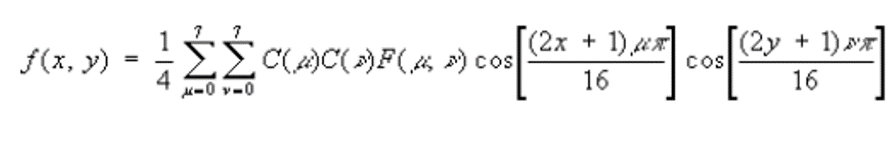
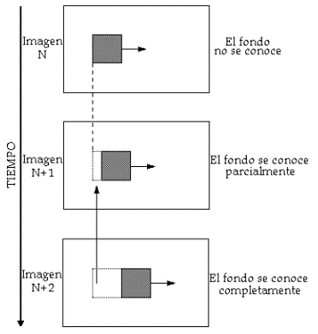

¿Qué es?
MPEG es un grupo de trabajo de un subcomité de ISO/IEC (International Organization for Standarization / International Electrotechnical Commission) encargada del desarrollo internacional de estándares para la compresión, decompresión, procesado y representación codificada de vídeo, audio y su combinación.
¿Para qué sirve el formato MPEG?
Gran parte de su ISO se centra en la compresión asimétrica de archivos. Por otro lado, como también es capaz de multiplexar un formato de audio como también los datos visuales de un video. De esta forma se permite la visualización de una imagen con sonido de manera digital.
El formato MPEG regula estos procesos para que puedan cumplirse de manera correcta evitando fallas al momento de la reproducción.
¿Cómo utilizar el formato MPEG?
Como se mencionó anteriormente este formato permite la compresión de datos de audio y video, siendo capaz de hacerlo gracias a que su estructura incluye codificadores y decodificadores que permiten la transformación.
Ahora bien, este formato de compresión puede variar en más de cinco formatos cada uno mejor que el otro, siendo los más conocidos MPEG -1, MPEG -2 y MPEG -4.
Versiones
-
MPEG-1
El formato de compresión MPEG -1 es aquel que comúnmente se utiliza para crear videos con imagen en movimiento y audio, fue el primer estándar de compresión que se presentó, este incluye en sus datos el formato de audio MP3 y suele bajar levemente la calidad de los videos, pero esto casi no se percibe.
-
MPEG-2
El formato de compresión MPEG -2 es el estándar que permite difundir la calidad de audio y video. Es capaz de soportar entrelazado y una resolución de alta calidad, suele ser utilizado en DVD, SVCD, CVD y en televisión digital.
-
MPEG-4
El formato de compresión MPEG -4 tiende a ser utilizado en aquellos vídeos donde existen contenedores DivX y Xvid. Este tipo de vídeo puede ser reproducido por diversos reproductores que son aptos tanto para MacOS como Windows. Y si eres un usuario de Mac te interesará saber cuáles son los mejores reproductores de vídeo para MacOS.
Método de compresión
Estos métodos de compresión, recurren a los procedimientos generales de compresión de datos, aprovechando además la redundancia espacial de una imagen (áreas uniformes), la correlación entre puntos cercanos y la menor sensibilidad del ojo a los detalles finos de las imágenes fijas (JPEG) y, para imágenes animadas (MPEG), se saca provecho también de la redundancia temporal entre imágenes sucesivas.
-
Paso 1 - Codificación intra o espacial
Cuando las imágenes individuales son comprimidas sin referencia a las demás, el eje del tiempo no entra en el proceso de compresión, esto por lo tanto se denomina codificación intra (intra=dentro) o codificación espacial.
La Transformada Discreta del Coseno se usa en MPEG para determinar el dominio de la frecuencia espacial en imágenes bidimensionales.

-
Paso 2 - Codificación inter o temporal
La codificación inter aprovecha la ventaja que existe cuando las imágenes sucesivas son similares. En lugar de enviar la información de cada imagen por separado, el codificador inter envía la diferencia existente entre la imagen previa y la actual en forma de codificación diferencial. El codificador necesita de una imagen, la cual fue almacenada con anterioridad para luego ser comparada entre imágenes sucesivas y de forma similar se requiere de una imagen previamente almacenada para que el decodificador desarrolle las imágenes siguientes.

-
Paso 3 - Codificación bidireccional
Cuando un objeto se mueve, este oculta lo que hay detrás de él, pero esto va cambiando a medida que se va moviendo, permitiendo observar el fondo. El revelado del fondo exige nuevos datos a ser transmitidos, ya que el área del fondo había sido ocultada anteriormente y la información no pudo ser obtenida desde una imagen previa.

Historia
-
1988
(Moving Picture Experts Group) es un grupo de trabajo de expertos que se formó por la Organización Internacional de Normalización (ISO) y la Comisión Electrotécnica Internacional (IEC) para establecer estándares para el audio y la transmisión video.
Fue establecido en 1988, por iniciativa de Hiroshi Yasuda (Nippon Telegraph and Telephone) y Leonardo Chiariglione (que desde el principio es el presidente del grupo). La primera reunión fue en mayo de 1988 en la ciudad de Ottawa, Canadá.
-
2005
A finales de 2005, el MPEG ha crecido hasta incluir aproximadamente 350 miembros por reunión, de diversas industrias, universidades e instituciones de investigación.